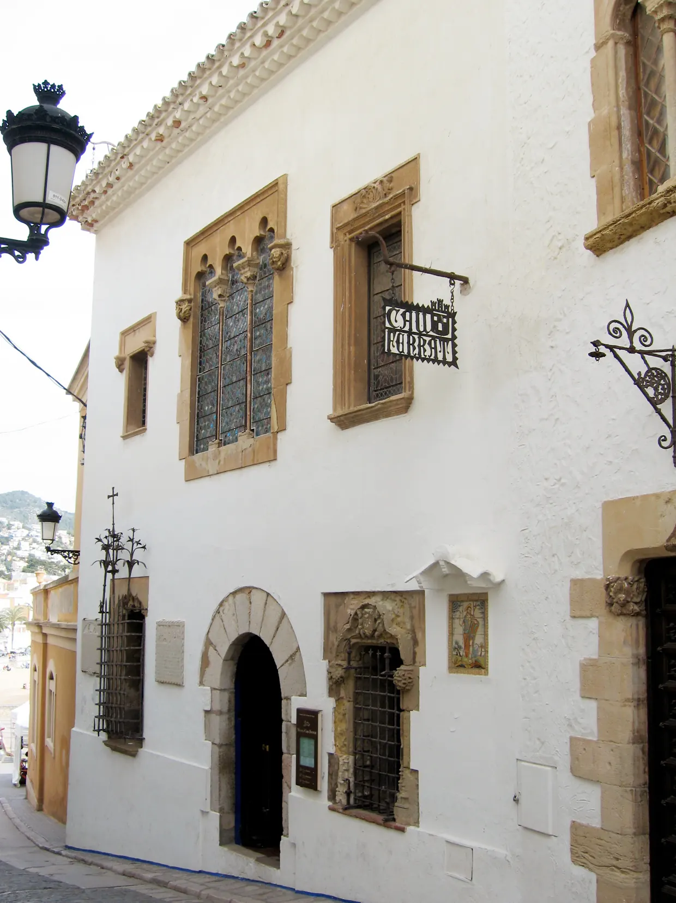

Cau Ferrat

| 지역 | Barcelona |
|---|---|
| 등급 | Must |
| 언제 | Day 4 · 9/1시간표 기준 |
| 상세 | 챕터 본문에서 보기 |
참고
오프라인입니다. 위키백과와 지도 링크는 연결되면 다시 동작합니다.
무엇인가 — 모더니즘의 신전
화가·작가·수집가 산티아고 루시뇰(1861–1931)이 자신의 철제 공예품과 미술 소장품을 두기 위해 만들었다. 1893–1894년에 사들인 두 채의 어부 집을 건축가 프란세스크 로젠트의 도움으로 집이자 작업실로 개조한 것이다. 1층은 카탈루냐 토속 건축의 소박함을 유지하고, 2층은 모더니즘 네오고딕 대연회장으로 트여 있다.
방직업으로 부유했던 집안에서 태어난 루시뇰은 가업을 이으라는 조부의 뜻을 거스르고 예술계로 갔다. 화가이자 소설가, 수집가, 극작가, 아마추어 고고학자, 저널리스트였고, 예술을 사제직으로 여겼다.
핵심 — 다섯 번의 축제가 만든 것
루시뇰이 시게스에 도착한 것은 1891년 10월이다. 1892년부터 1899년까지 열린 '모더니즘 축제’, 1893–1894년의 카우 페라트 건축, 1898년 엘 그레코 기념비 제막이 시체스를 모더니즘의 메카로, 루시뇰을 이 새로운 운동의 대사제로 만들었다.
19세기 말에서 20세기 초 사이 시체스에서는 다섯 번의 모더니즘 축제가 열렸고, 미켈 우트리요와 라몬 카사스 같은 친구들과 함께 루시뇰이 조직했다.
축제의 내용은 도발적인 연극, 시 낭송, 음악회, 전시였다. 문화로 사회를 바꾸겠다는 운동이었고, 그 본부가 이 집이었다.
소장품에서 볼 것
1894년 1월 파리에서 엘 그레코의 「성 베드로의 눈물」과 「참회하는 막달레나」를 사들이며 수집이 시작됐다. 루시뇰 본인과 라몬 카사스, 사발로 등 친구들의 그림이 대부분이고, 이시드로 노넬·피카소·마놀로 우게 같은 신진 작가의 작품도 사들였다.
즉 피카소가 무명이던 시절에 그를 사 준 사람의 집이다.
1층과 2층의 낙차를 보라 아래는 어부의 집, 위는 네오고딕 대연회장이다. 같은 건물 안에서 계급과 야심이 층으로 갈린다. 개조가 아니라 선언이다.
철물을 보라 'Cau Ferrat’은 '철의 소굴’이라는 뜻이다. 루시뇰이 모은 카탈루냐 단철 공예 컬렉션이 이 집의 시작이었다.
실용
| 항목 | 값 |
|---|---|
| 위치 | 산 세바스티아 해변가. 마리셀 궁 바로 옆 |
| 통합권 | 마리셀과 결합권이 있는 경우가 많다 재확인 |
| 체류 | 60–90분 권장. 작지만 밀도가 높다 |
| 요금·운영 | 재확인 |